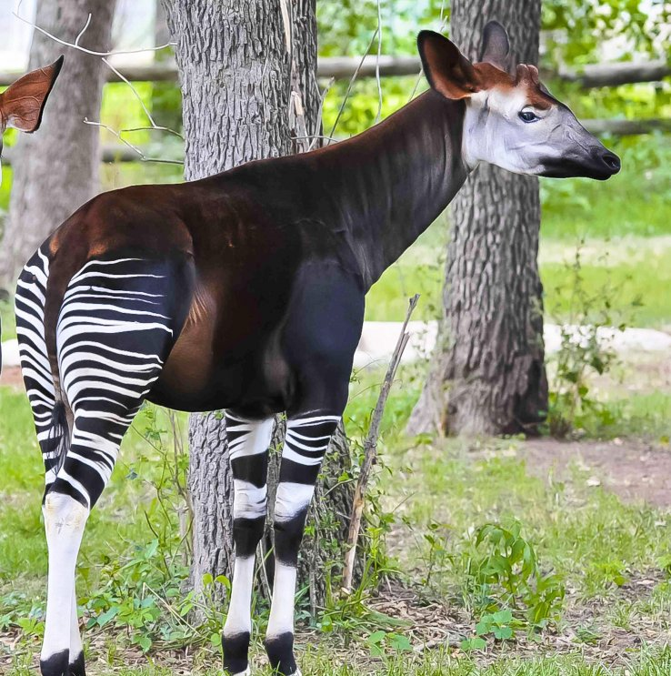
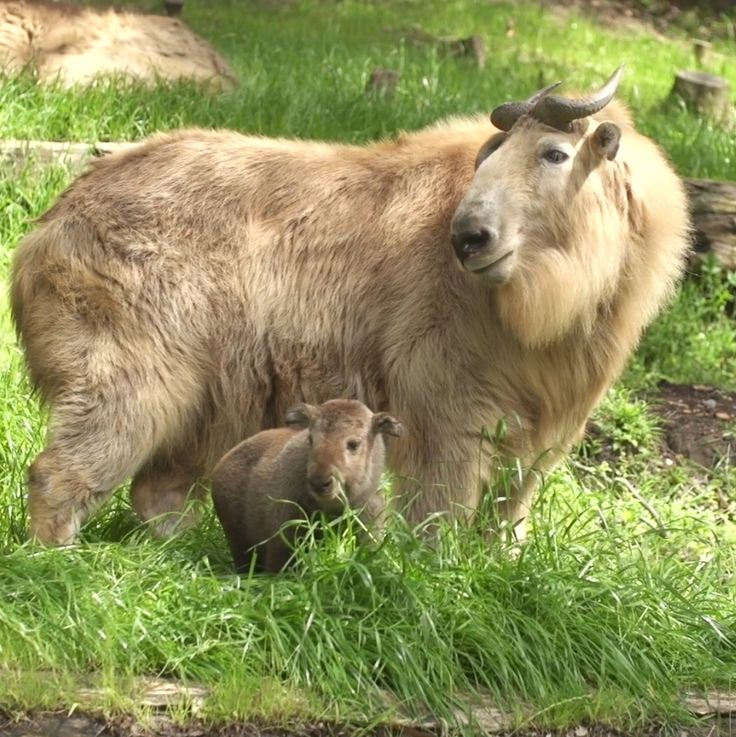
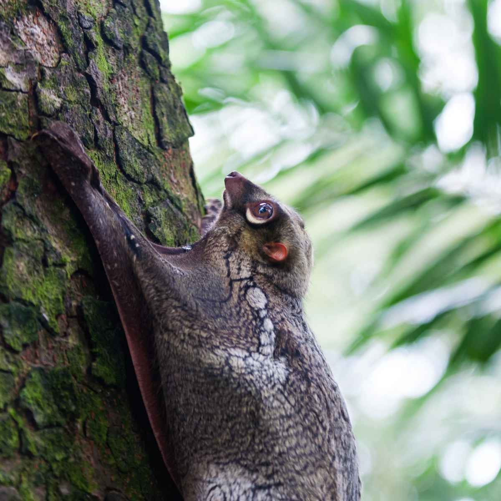
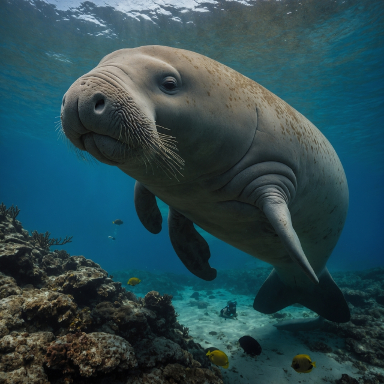
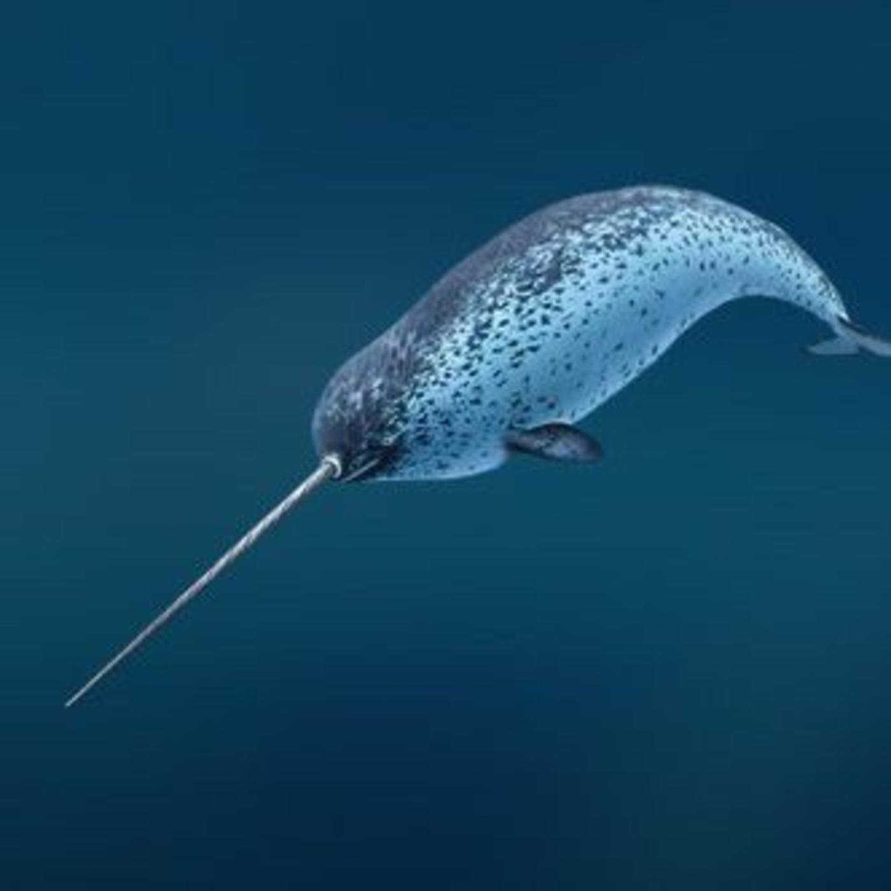

 Окапи обитает в лесах Конго, питается листьями и почками, скрывается от леопардов, и содержать его дома невозможно. Такин живет в Гималаях, питается травой и бамбуком, врагами для него являются волки и леопарды, а для дома это животное не подходит
 Такин живет в Гималаях, питается травой и бамбуком, врагами для него являются волки и леопарды, а для дома это животное не подходит.
Окапи обитает в лесах Конго, питается листьями и почками, скрывается от леопардов, и содержать его дома невозможно. Такин живет в Гималаях, питается травой и бамбуком, врагами для него являются волки и леопарды, а для дома это животное не подходит.
 Дюгонь — морской житель теплых морей, питается водорослями, может стать жертвой акул, и о домашнем содержании не может быть и речи.
 Нарвал — арктический кит с огромным бивнем, питается рыбой, враги — косатки и белые медведи, и он абсолютно не приспособлен для неволи
Разработчик: Б9123-09.03.04 (4 подгруппа) Манжелей Никита Александрович